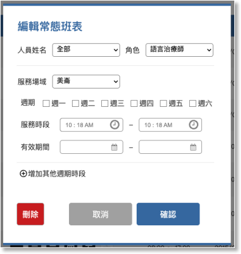

05-2-1 編輯常態班表


功能

內容

說明
編輯常態班表規則
1. 此功能只提供給總管理者、門診管理者及住院管理者瀏覽及編輯。
2. 點任一常態班表資料列，進入編輯狀態時，自動帶出已存在資料的相關欄位。
3. 可新增人員常態班表，或點擊已存在的項目進行該筆資料的修改或刪除。

姓名

下拉選項

必填欄位，全部聽語治療組成員，含組長、副組長、語言治療師、聽力治療師及個管師。(310聽語治療組成員)
角色
下拉選項，預設為語言治療師
選項
- 語言治療師
- 聽力治療師
- 個管師

服務場域

下拉選項，預設為語言治療師

服務場域、服務日、服務時段及有效時間為一組設定，同一位治療師可設定多組班表。
服務日週期
多選項
checkbox
選項
- 週一
- 週二
- 週三
- 週四
- 週五
- 週六
服務時段
時間元件
1. 半小時為一個刻度
2. 需設定起迄時間

有效時間

日期元件

需設定開始日期，結束日期預設顯示當年度最後一天，可手動變更結束時間。
增加其他週期時間
按鈕
1. 點選後複制一份可另外設定的服務場域、服務日、服務時段及有效時間，確認儲存後，常態班表顯示2筆資料。
2. 每次最多複制一組，若同一位治療師需要設定多組班表，需先確認後再新增一筆新的常態班表。

記錄按鈕


- 確定
- 取消
- 刪除，再次確認是否要刪除。